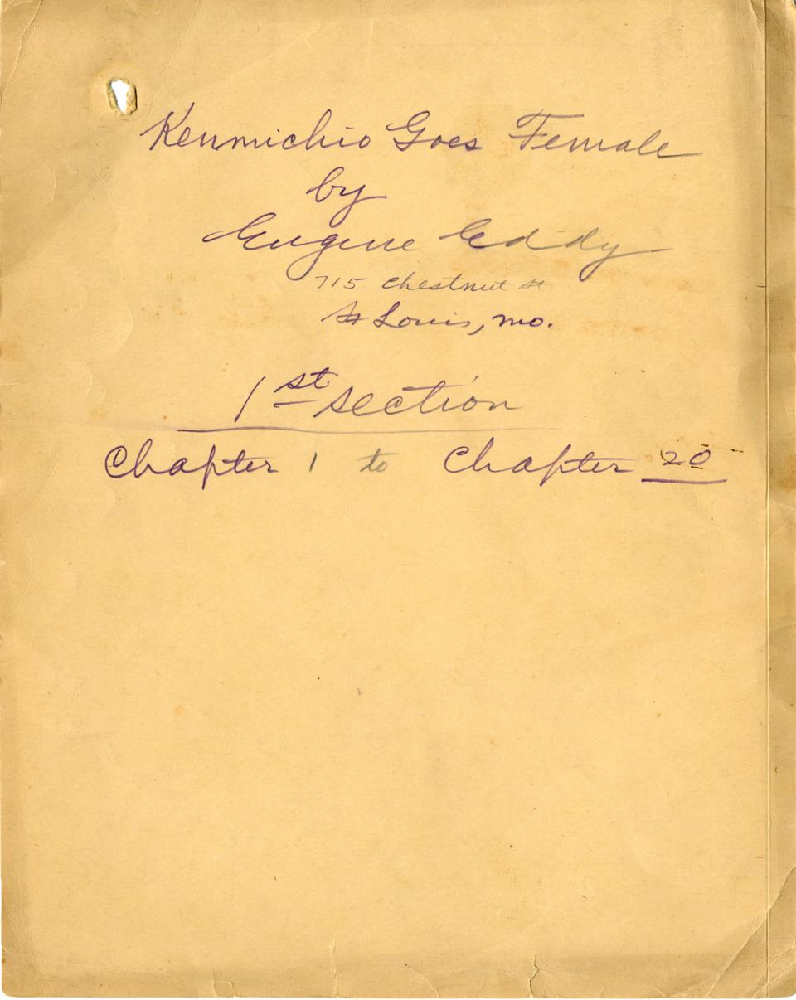

Title Page ⊕ The title page is hand-written on a separated section of a manila file folder. This section binds together chapters 1 through 20, and a similar title page is attached to two other blocks of the manuscript.  Next: Author's Preface